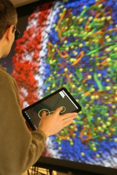
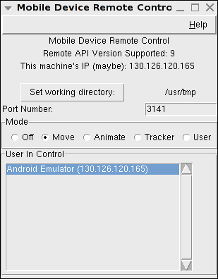
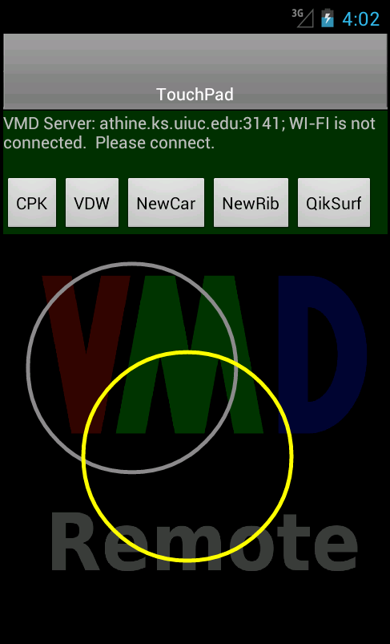
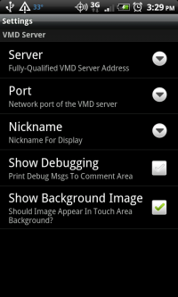

VMD Remote is a App for Android-powered devices that allows remote
control of a VMD session.
Requirements:
- VMD 1.9.2 beta or later.
- An Android device running Android 4.0.3 or higher
- Wi-Fi. Ideally you will be connected to the same 'subnet' as the VMD
server computer that you are wanting to control. If the two are far-removed,
network-wise, from each other, your experience may be sub-optimal.
Installation:
- If you are on an Android device that has access to the Google Play
Store, just
go to The
Market Page For The VMD Remote Control App and install. This is the
preferred way to install the app. You will automatically have access to the
latest version.
- If you are on a device that doesn't have access to the Google Play Store:
- Make sure that your Android device is configured to allow third party
applications. On the Kindle Fire, for instance, you need to click on the
Settings Wheel at the top right corner of the home screen, then click on
More and then click on Device. From the Device menu,
make sure that the option to Allow Installation of Applications is
ON. On other devices, on the home screen, go to Settings |
Applications and make sure that "Unknown sources" is checked/enabled to
allow the installation of non-Market applications.
- Download and install the application. VMDMobile-release.apk is the current app file.
- Before running the application, make sure that you have Wi-Fi turned on and
that you are properly connected to a Wi-Fi network.
Running and using the App:
On the VMD desktop/laptop computer:
- Run VMD.

- From the Extensions menu, you can go to Visualizations | Remote Control to
bring up a window where you can configure the session. (Note: If you are on a
later version of Windows or have other firewall software installed, you might
get a warning about network access. You will need to allow access for the
plugin to work properly) The highlighted user in the 'User In Control' list is
the only user who can remote control the session. You can select a different
user to be in control if you wish.
Alternatively, there is a text command, mobile, that you use to mobile-enable VMD.
If you just type 'mobile' into the console you will be presented
with usage instructions:
vmd > mobile
mobile usage:
mobile mode <mode>
modes: off, move, animate, tracker, user
mobile port <incoming network port number>
mobile get <mode/port/clientList>
mobile set activeClient NickName IP
Mode descriptions:
- off: configure VMD to not accept incoming
connections.
- move: The android device will allow you to rotate, translate, and
scale your molecular view. This is the default when you open the plugin
window.
- animate: The android device will act as a 'scrub' to
move through a trajectory.
- tracker: The android device will act as tracker.
- user: Can be used, in conjunction with a user script, to do whatever you can
imagine and write the code for.
By default, VMD will listen on port 3141. If you need to change this, you can do
so.
get can be used to retrieve, for use in a script, the currently set mode,
port, and list of clients that are connected.
You can set the current user in control by calling set activeClient
like:
mobile set activeClient "Kindle Fire" "192.168.0.1"
where the name (Kindle Fire) and IP (192.168.0.1) match the nickname and IP
given for a specific user via the mobile get clientList command.
Want to automatically be able to connect to your VMD session without needing to
remember to go the Extension menu every time? Just add:
mobile mode move
to your VMD startup script.
On the Android device:
- Launch the app.
- If this is the first time running, you will first be asked what VMD server
you wish to connect to. You need to 'Add A New Server...' and give the
fully-qualified domain name of the machine running VMD (it can be a numeric IP
address or a domain name). If you are not sure about the name of the VMD
server, the plugin window on the desktop will give a possible IP address that
you can try. What will end up working really depends on how the various routers
and firewalls are configured for your location. While not likely needed, you
can also change the port numbers that the connections between the mobile device
and the VMD server utilize.
- Go to
Menu | Settings and set Nickname to a
descriptive 16 character (or less) name for your device. The Nickname will show
up in the VMD mobile plugin window.

On the main screen, the color of the area behind the buttons tells the current
connection status:
- Red - The app is not connected to a VMD desktop. In technical terms,
the app has not received any network traffic from a running VMD. It is
technically possible, depending on firewall settings, that the app is
sucessfully sending information TO the VMD desktop, but isn't seeing anything
back.
- Yellow - The app is connected to a VMD desktop, but is not currently
in control of the VMD session.
- Green - The app is connected to a VMD desktop, and is currently
in control of the VMD session.
If you have the VMD server plugin configured to move mode:
- Pressing a finger on the Android screen and then moving from that spot will cause the
molecular system to start rotating in that direction. The farther you move from
the initial spot, the faster the rotation.
- Pinch to zoom in and out.
- If you touch two fingers to the screen (right next to each other; touching) and
drag both fingers in a direction, you will translate the system.
- If you touch two fingers to the screen and rotate both of them clockwise or
counterclockwise, the system will similarly rotate (can be combined with pinch
to zoom).
If you have the VMD server plugin configured to translate mode:
- If you apply a finger to the Android screen and scrub/move to the right, you
will increase the trajectory frame you are viewing. Scrubbing/moving to the
left will decrease the trajectory frame you are viewing.
Android App Menu options:
- Take Snapshot - This will take a snapshot image of the current
VMD OpenGL screen and download it to your device. The snapshot image will
show up in a tab that you can select from the top of the screen.
Once you have the image on the mobile screen you can pinch to zoom and
drag the viewport around. Remember that this is just a static image. No
rotating! You can, however, choose to share the image. By pressing the
'share' button you can use any app on your mobile device that supports
JPEG images. This will typically include, at a minimum, your email program
and any social media sites that you might have an app for.
- Reset VMD View - The equivalent of pressing the equals
('
=') key from within VMD. If you somehow manage to 'lose' the
molecule, this is handy.
- Stop/Start Sending Touchpad - A toggle that will allow you to send or
stop sending information about pressing the touchpad. The App starts in a mode
of 'send'.

- Select New Server - If you wish to change the server you are
connected to, this will bring up the screen to choose a previously used
or new server.
- Choose Buttons - Configure which button set you wish to see on the
screen. The Default button set is Aux-0 through Aux-3. But, other button
configurations can be downloaded from the VMD server. See the section below
on Button Configuration for more information.
- Settings - Configure Nickname, Sensitivities, and other settings.
- Nickname - A descriptive 16 character (or less) name for your device.
The Nickname will show up in the VMD mobile plugin window.
If you do not set a Nickname, VMD will show a default name
(Anonymous User) for your device.
- Sensitivity - Mobile devices send information to the server at
different rates depending on their speed.
You can turn on additional debugging statements that will show on the second
line of the main display, and you choose whether or not you wish to see the VMD
remote message in the background of the touchpad area.
Button Configuration:
The buttons at the top of the screen can be configured with VMD on the desktop
via scripting. There are four default buttons: 0, 1, 2, and 3. Lets say you have
created a TCL script, called button1Pressed that you wanted to be
called whenever Button 1 (called Aux-1 in the mobile window) is pressed. Typing
the following into the console will do this:
proc button1Pressed { } {
puts "The Aux-1 button was pressed"
}
user add key Aux-1 { button1Pressed }
This script will then be called each time that Button 1 is pressed (and would
print the above text to the VMD console). Similarly, you can add a script for
Aux-0 or Aux-2, or Aux-3.
A more useful way to use the buttons is to create a button group for your
desired activity.
To do this you add desired button commands to the group using 'addButton' and
then you push the new buttons out to the mobile device by using
'sendButtonConfiguration'.
# -------------------------------------------------------------------------
proc ::remote::configureRepresentations {} {
addButton Representations CPK { mol modstyle 0 0 CPK } 1
addButton Representations VDW { mol modstyle 0 0 VDW } 1
addButton Representations NewCar { mol modstyle 0 0 NewCartoon } 1
addButton Representations NewRib { mol modstyle 0 0 NewRibbons } 1
addButton Representations QuickSurf { mol modstyle 0 0 QuickSurf } 1
}
# -------------------------------------------------------------------------
proc ::remote::configurePlugins {} {
# No spaces in names! for now
# view change renderer
addButton ViewChangeRenderer Prev { ::VCR::goto_prev } 1
addButton ViewChangeRenderer Prev0.5 { ::VCR::goto_prev 0.5 } 1
addButton ViewChangeRenderer Next { ::VCR::goto_next } 1
addButton ViewChangeRenderer Next0.5 { ::VCR::goto_next 0.5 } 1
# view master
addButton ViewMaster Prev { ::ViewMaster::do_restore_prev } 1
addButton ViewMaster Next { ::ViewMaster::do_restore_next } 1
addButton ViewMaster SaveView { ::ViewMaster::do_save } 1
sendButtonConfiguration
}
# ----------------------
If you wish to run these procedures to load these button groups you could type
the following into the VMD console:
::remote::configureRepresentations
::remote::configurePlugins
Once you have pushed the new button configurations to the mobile device, on the
device itself you can go to the menu and choose the button group that you wish
to see on the screen.